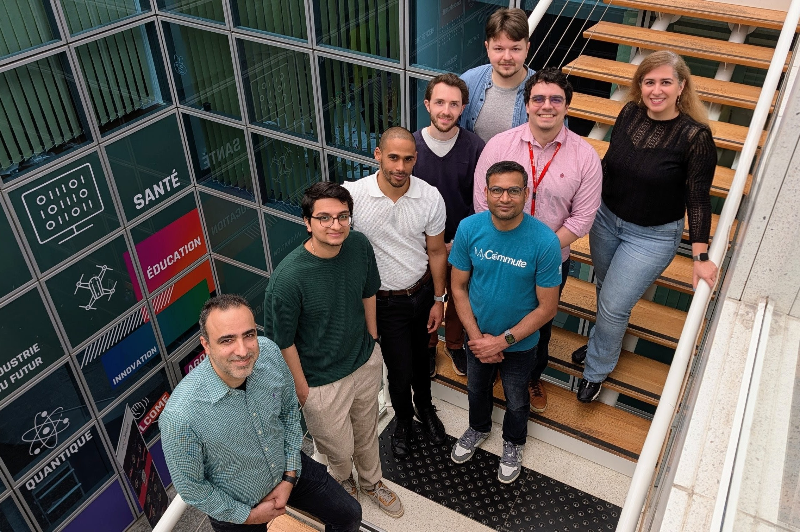
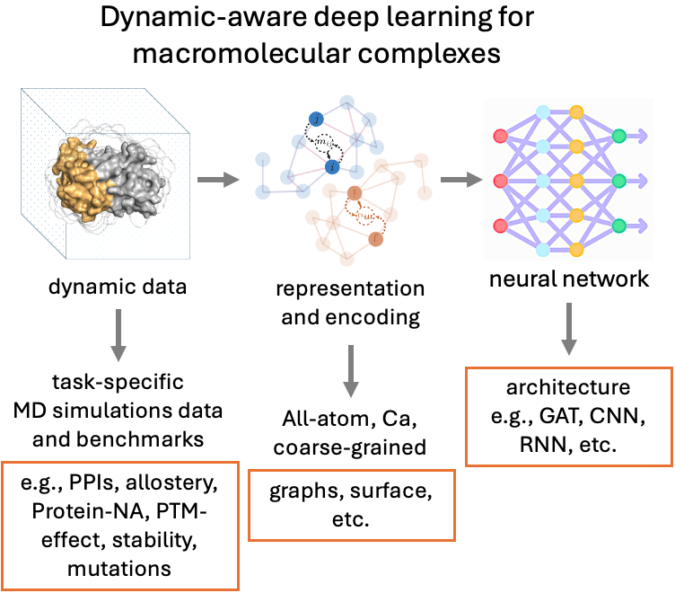
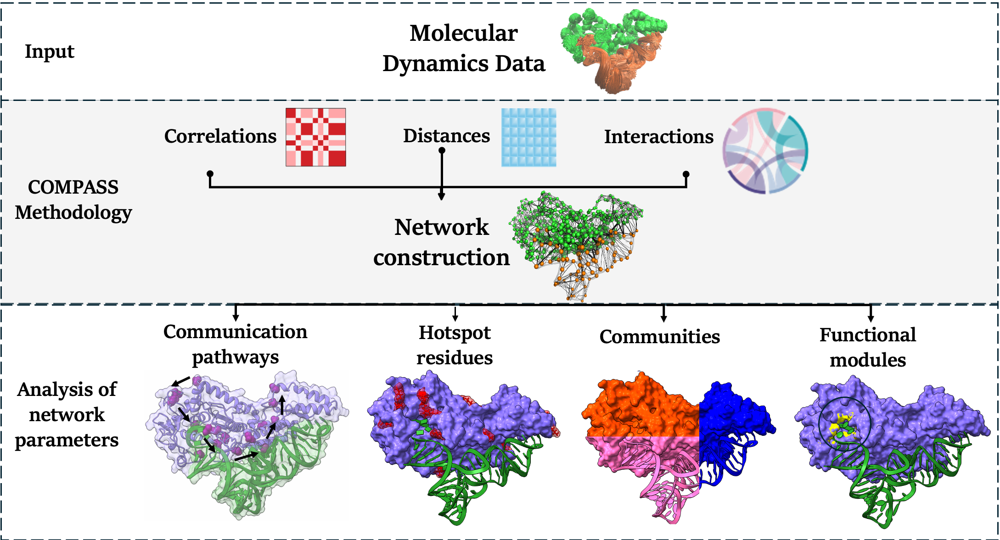
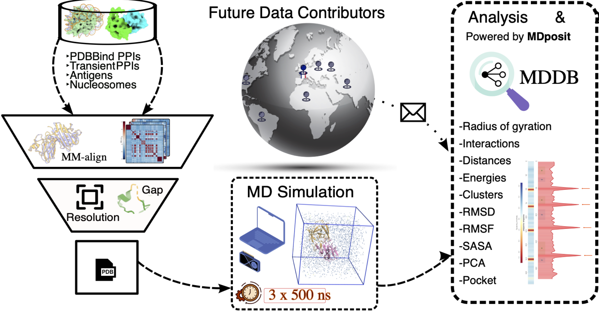
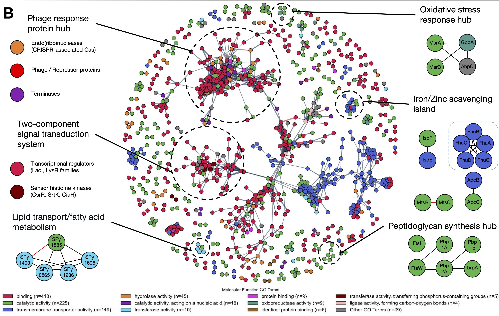
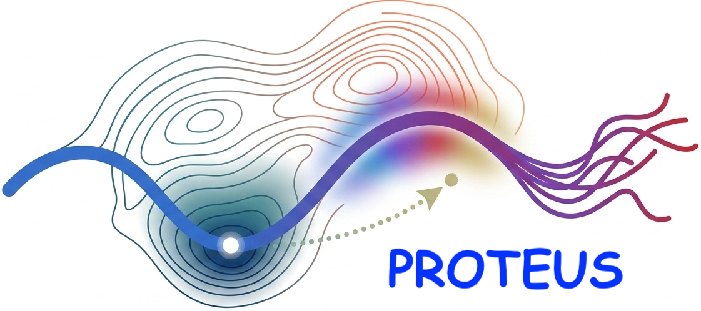

Delta Research Team at Inria
Dynamics-aware data-driven approaches for macromolecular complexes and design

DELTA Team Photo (2026)


Show Past Members
- Yu Tian - BSc Internship
- Sneha Bheemireddy - Postdoc
- Ishola Abeeb Akinwumi - MSc Internship

Dynamic-aware deep learning models
Our team aims to develop data-driven approaches capable of systematically learning the conformational heterogeneity of biological systems to solve fundamental challenges stem from static-based approaches. Such frameworks typically consists of multiple (task-specific) steps, including data generation, feature extraction, representation and encoding, and the architecture design. The task-in-hand has a direct impact on the method of choice for each step. Our recent efforts in this direction led to introducing DynaRepo and DynamicGT.
We established DynaRepo, the first official MDDB node in France (second largest in Europe), hosting >5.5 billion frames for >700 macromolecular complexes (>1 ms of simulation time), including protein-protein and protein-nucleic acid assemblies. Each complex was simulated in triplicate for 500 ns, with pre-computed analyses (e.g., RMSD, SASA, correlations) to facilitate AI training. Leveraging DynaRepo, we developed DynamicGT, the first dynamic-aware architecture for the prediction of protein binding sites. It is a novel GT architecture that captures the conformational heterogeneity of proteins for residue classification of binding sites. Inspired from the principles of cooperative graph neural networks, DynamicGT enables dynamic message passing between surface and core atoms, where a geometric transformer imposes strict message-passing constraints to predict binding site probabilities.

Enhanced data-driven protein design
We are actively contributing to developing innovative frameworks for synthetic biology and protein design. One of the aims of our team is to develop a framework for large-scale protein binder design with high specificity and affinity toward the target. Our effort in this direction so far led to the introduction of SURFACE-Bind database, an interactive web server that provides researchers with access to detailed data of the human surfaceome, facilitating the design of next-generation therapeutics. We introduced a large-scale computational resource coupled with an enhanced experimental framework for de novo protein binder design. Our approach targeted the entire human surfaceome (2,886 protein targets), a critical class of therapeutic targets, paving the way for new protein-based therapeutics. Leveraging a surface-based geometric convolutional neural network, we systematically evaluated the entire human surfaceome, identifying ~4,500 binding sites and targeted them by a library of 640,000 small fragments (seeds), equivalent to performing 3 billion protein-protein docking calculations. We provided detailed insights into the targetability of each predicted binding interface and suggested a high-quality set of binder seeds to support future target-specific protein design approaches.

Allosteric Communications in macromolecular complexes
Allostery relies on long-range communication networks that connect distant functional regions within macromolecular assemblies. While extensively studied in proteins, the role of nucleic acids in these communication pathways remains poorly understood. We developed ComPASS, a large-scale, dynamics-informed computational framework that integrates molecular dynamics simulations to construct weighted inter-residue communication networks spanning proteins and nucleic acids. By combining dynamical correlations, interactions, and spatial relationships, ComPASS reveals how signals propagate across complex assemblies. Our analyses uncover diverse mechanisms of allosteric signal transmission in protein–protein and protein–nucleic acid systems, providing new insights into the dynamic principles governing molecular function.

Machine learning-guided integrative structural biology & Host-pathogene interactions
The aim of the Delta team in this part is to perform research that can be applied to real, ongoing biological problems. Accordingly, we actively collaborate with national and international groups (mostly experimental biologists) to further evaluate our scientific developments in practice. The application part of our research follows three main strategies: First, antimicrobial resistance (AMR), toward elucidating the molecular complexes that are necessary for viral or bacterial survival and infection. Second, designing novel protein binders (peptides or proteins) with therapeutic potentials, and third, elucidating the dynamic behavior of large macromolecular complexes. More specifically, we study the mechanisms of survival and infection in Streptococcus pyogenes, The dynamic behavior of type IV pili across various bacterial species, and the interactions of Shigella IpaA with human focal adhesion proteins.

COMPASS
Communication Pathway Analysis within Protein–Nucleic Acid Complexes.

DynaRepo
Repository of macromolecular conformational dynamics for proteins, nucleic acids, and their complexes.

DynamicGT
Dynamic-aware geometric transformer for predicting protein binding interfaces in flexible and disordered regions.

ppIRIS
Deep learning framework for proteome-wide prediction of bacterial protein–protein interactions.

SURFACE-Bind
Mapping targetable sites on the human surfaceome to enable large-scale protein binder design.

PROTEUS
Unraveling protein conformational plasticity with PROTEUS.
Latest News
Apr/2026 – New paper!!!
We are happy to announce that our latest work, PROTEUS is now available on bioRxiv. PROTEUS provides sequence-based rapid predictions of protein conformational plasticity. Congratulations to Luiz for putting together this great work.
Apr/2026 – New paper!!!
We are happy to announce that the results of our nice collaboration with Christoph Welsch (Goethe University Frankfurt) is now published in Science Advances. Congratulations to all authors for this amazing story.
Mar/2026 – New paper!!!
Our recent work ppIRIS is now published in Advanced Science. Congrats to Luiz for his amazing work.
Jan/2026 – New paper!!!
Our large-scale collaboration with EPFL and Novo Nordisk on de novo protein binder design for the entire human surfaceome is now published in PNAS.
Jan/2026 – NCSB 2026
We are happy to announce that the 4th NCSB will be held on June 9th at Nancy, with the support of the Centre Inria de l’Universite de Lorraine, LORIA, and ANR under the France 2030 grant operated by the Inria Quadrant Program. We have the pleasure of hosting internationally distinguished experts in computational and structural biology. Here is the program. To register please visit here.
Dec/2025 – New paper!!!
Our recent work DynamicGT is now published in Cell Systems. Congrats to Omid for his second PhD paper.
Dec/2025 – DynaRepo highlighted by GENCI in the Jean Zay 4 Grand Challenges
DynaRepo has been selected as one of ten flagship scientific projects highlighted by GENCI for the Jean Zay 4 Grand Challenges (2024–2025). 3.8 million H100 GPU hours across different disciplines! See the article here
Nov/2025 – Feature Article on Antibody Engineering
Our recent works in antibody engineering were highlighted in a feature article published by the Centre Inria at Université de Lorraine. See the article here.
Oct/2025 – ANR-PIQ grant – 2025
Yasaman has been awarded the ANR-PIQ grant for the DynaNova project to advance research on protein allosteric signaling. (Link)
Jan/2025 – ANR-JCJC (IDPFold) grant – 2025
Hamed has been awarded the ANR-JCJC grant for the IDPFold project, focused on investigating folding-upon-binding mechanisms in intrinsically disordered proteins. (Link)
Sep/2024 – ANR-PRC (VITAL) grant – 2024
Hamed and collaborators have been awarded the ANR-PRC VITAL grant to support their collaborative research initiatives. (Link)
Sep/2023 – ANR-PRC (GlycoLink) grant – 2023
Hamed and collaborators have been awarded the ANR-PRC GlycoLink grant to advance research in glycoscience. (Link)
Open Positions
We are looking for talented individuals to join our team. Check out our current opportunities below:
Contact Us
How to come to visit us?
The team is located at the Inria center in Nancy, France.
By train: From Nancy Gare, take the trolleybus (T1, direction Vandoeuvre-CHU; you can buy tickets at the station or through the NéMO app). Get off at Vélodrome, then walk about 5 minutes to the campus.
By air: The nearest major airports are in Paris (CDG) or Luxembourg (LUX). From CDG, take the TGV to Lorraine TGV and then the shuttle bus to Nancy Gare.